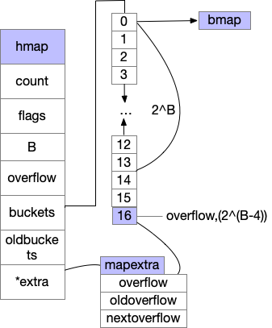
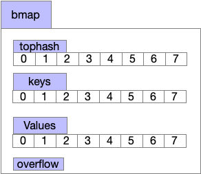
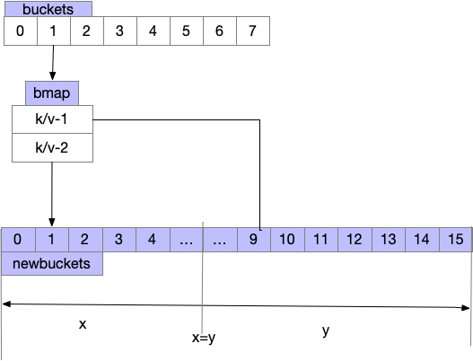

map详解
本文基于golang 1.22版本
哈希表的实现方式
- 开放寻址法(感兴趣可自行查找了解)
- 双哈希法 开放寻址的改良,多次哈希减少冲突
- 拉链法 将一个bucket实现成一个链表,hash后落在同一个bucket里的key会插入链表来解决哈希冲突,golang是采用的链表解决冲突
下文我们将从map的数据结构,初始化,增删改查来分析源码是怎么实现的
如何查找map创建源码
golang代码如下，我们使用go tool compile -N -l -S main.go查看汇编代码,如下,小于8的通过runtime.makemap_small,大于8的runtime.makemap
还需注意,make(map[xx]xx,int64)这种形式会被特殊处理,最终也调用runtime.makemap，我们以runtime.makemap来分析
package main
var m1 = make(map[int]int, 0)
var m2 = make(map[int]int, 10)
...
(main.go:3) CALL runtime.makemap_small(SB)
(main.go:4) CALL runtime.makemap(SB)
...
函数的定义如下
//cmd/compile/internal/typecheck/_builtin/runtime.go
func makemap64(mapType *byte, hint int64, mapbuf *any) (hmap map[any]any)
func makemap(mapType *byte, hint int, mapbuf *any) (hmap map[any]any)
func makemap_small() (hmap map[any]any)
具体我们来看makemap这个函数
//runtime/map.go
func makemap(t *maptype, hint int, h *hmap) *hmap {
//@step1 判断是否溢出
mem, overflow := math.MulUintptr(uintptr(hint), t.Bucket.Size_)
if overflow || mem > maxAlloc {
hint = 0
}
//@step2 初始化hmap结构
// initialize Hmap
if h == nil {
h = new(hmap)
}
//随机哈希种子,防止碰撞共计
h.hash0 = uint32(rand())
// Find the size parameter B which will hold the requested # of elements.
// For hint < 0 overLoadFactor returns false since hint < bucketCnt.
B := uint8(0)
//@step3 设置桶的数量(2^B方个筒)
for overLoadFactor(hint, B) {
B++
}
h.B = B
//@step4 桶数量大于0 初始化桶内存
// allocate initial hash table
// if B == 0, the buckets field is allocated lazily later (in mapassign)
// If hint is large zeroing this memory could take a while.
if h.B != 0 {
var nextOverflow *bmap
h.buckets, nextOverflow = makeBucketArray(t, h.B, nil)
if nextOverflow != nil {
h.extra = new(mapextra)
h.extra.nextOverflow = nextOverflow
}
}
return h
}
我们总结下,创建map的代码主要是返回了一个底层的hmap对象,具体的我们来看下hmap的结构体,主要的结构如下,bmap结构下文有图 
//runtime/map.go
type hmap struct {
//总元素
count int // # live cells == size of map. Must be first (used by len() builtin)
//状态标位,如扩容中,正在被写入等
flags uint8
//桶的个数=2^B
B uint8 // log_2 of # of buckets (can hold up to loadFactor * 2^B items)
uint16 // approximate number of overflow buckets; see incrnoverflow for details
//哈希种子,防止哈希碰撞共计
hash0 uint32 // hash seed
//存储桶的数组
buckets unsafe.Pointer // array of 2^B Buckets. may be nil if count==0.
//发生扩容后 存的旧的bucket数组
oldbuckets unsafe.Pointer // previous bucket array of half the size, non-nil only when growing
nevacuate uintptr // progress counter for evacuation (buckets less than this have been evacuated)
//扩展字段
extra *mapextra // optional fields
}
我们来总结下map的初始化
- 判断长度调用makemap/makemap_small
- 创建hmap结构体,桶的个数为2^B
- 通过
makeBucketArray分配具体数据 - 分配扩展桶,具体个数我们来看
makeBucketArray的具体逻辑
makeBucketArray 的创建
- 当桶的个数小雨2^4时,由于数据较少,溢出桶没必要创建
- 多余2^4时,会创建2^(B-4)个溢出桶
- 溢出筒则添加到了buckets数组最后边,比如B=4,创建了16个桶+1个溢出筒,申请的数组长度为17
//runtime/map.go 省略了部分不相干代码
func makeBucketArray(t *maptype, b uint8, dirtyalloc unsafe.Pointer) (buckets unsafe.Pointer, nextOverflow *bmap) {
base := bucketShift(b)
nbuckets := base //桶的总个数
if b >= 4 {
nbuckets += bucketShift(b - 4) //添加了溢出筒
sz := t.Bucket.Size_ * nbuckets
up := roundupsize(sz, t.Bucket.PtrBytes == 0)
if up != sz {
nbuckets = up / t.Bucket.Size_
}
}
if dirtyalloc == nil {
buckets = newarray(t.Bucket, int(nbuckets))
}
//有溢出桶的情况下,由代码将buckers与overflow分割
if base != nbuckets {
nextOverflow = (*bmap)(add(buckets, base*uintptr(t.BucketSize)))
last := (*bmap)(add(buckets, (nbuckets-1)*uintptr(t.BucketSize)))
last.setoverflow(t, (*bmap)(buckets))
}
return buckets, nextOverflow
}
我们知道map的元素是放在bucket数组里,而具体存入的数据结构bmap如下图,我们放到map写入元素来讲解 
map的读
map读写删除元素,逻辑整体差不多,都是找到对应的bucket桶然后去bmap里找,我们先看下读的相关逻辑,涉及到寻找key在map里对应的位置,
写仅在读的逻辑增加了map扩容,map对应的定义如下,根据key的不同,会调对应的mapaccess1(读),我们以map[any]any为例
//cmd/compile/internal/typecheck/_builtin/runtime.go
// *byte is really *runtime.Type
func makemap64(mapType *byte, hint int64, mapbuf *any) (hmap map[any]any)
func makemap(mapType *byte, hint int, mapbuf *any) (hmap map[any]any)
func makemap_small() (hmap map[any]any)
//读相关
func mapaccess1(mapType *byte, hmap map[any]any, key *any) (val *any)
func mapaccess1_fast32(mapType *byte, hmap map[any]any, key uint32) (val *any)
func mapaccess1_fast64(mapType *byte, hmap map[any]any, key uint64) (val *any)
func mapaccess1_faststr(mapType *byte, hmap map[any]any, key string) (val *any)
func mapaccess1_fat(mapType *byte, hmap map[any]any, key *any, zero *byte) (val *any)
func mapaccess2(mapType *byte, hmap map[any]any, key *any) (val *any, pres bool)
func mapaccess2_fast32(mapType *byte, hmap map[any]any, key uint32) (val *any, pres bool)
func mapaccess2_fast64(mapType *byte, hmap map[any]any, key uint64) (val *any, pres bool)
func mapaccess2_faststr(mapType *byte, hmap map[any]any, key string) (val *any, pres bool)
func mapaccess2_fat(mapType *byte, hmap map[any]any, key *any, zero *byte) (val *any, pres bool)
//写相关
func mapassign(mapType *byte, hmap map[any]any, key *any) (val *any)
func mapassign_fast32(mapType *byte, hmap map[any]any, key uint32) (val *any)
func mapassign_fast32ptr(mapType *byte, hmap map[any]any, key unsafe.Pointer) (val *any)
func mapassign_fast64(mapType *byte, hmap map[any]any, key uint64) (val *any)
func mapassign_fast64ptr(mapType *byte, hmap map[any]any, key unsafe.Pointer) (val *any)
func mapassign_faststr(mapType *byte, hmap map[any]any, key string) (val *any)
func mapiterinit(mapType *byte, hmap map[any]any, hiter *any)
func mapdelete(mapType *byte, hmap map[any]any, key *any)
func mapdelete_fast32(mapType *byte, hmap map[any]any, key uint32)
func mapdelete_fast64(mapType *byte, hmap map[any]any, key uint64)
func mapdelete_faststr(mapType *byte, hmap map[any]any, key string)
func mapiternext(hiter *any)
func mapclear(mapType *byte, hmap map[any]any)
//go 代码如下
var m1 = make(map[any]any, 10)
m1[10] = "20"
a := m1[10]
//对应的汇编如下
//CALL runtime.mapassign(SB) 写
//CALL runtime.mapaccess1(SB) 读
//runtime/map.go
//省略部分判断代码
func mapaccess1(t *maptype, h *hmap, key unsafe.Pointer) unsafe.Pointer {
//根据key,以及初始化map随机哈希种子hash0,生成哈希
hash := t.Hasher(key, uintptr(h.hash0))
//例如B=4,则m=1<<4-1
m := bucketMask(h.B)
//寻找hmap.buckes里对应的桶,hash&m,例如11&01=1,一半hash长度远超m的长度,而m取决于buckets的个数,无需关心hash具体的值
b := (*bmap)(add(h.buckets, (hash&m)*uintptr(t.BucketSize)))
//有旧的桶,扩容逻辑,下文详细讲解
if c := h.oldbuckets; c != nil {
if !h.sameSizeGrow() {
// There used to be half as many buckets; mask down one more power of two.
m >>= 1
}
oldb := (*bmap)(add(c, (hash&m)*uintptr(t.BucketSize)))
if !evacuated(oldb) {
b = oldb
}
}
//64位hash>>8*8-8,获取前8位 如(top)xxx....xxxxxx
top := tophash(hash)
bucketloop:
for ; b != nil; b = b.overflow(t) {
//bucketCnt 8个
for i := uintptr(0); i < bucketCnt; i++ {
//根据top选bmap里对应的key,value
if b.tophash[i] != top {
if b.tophash[i] == emptyRest {
break bucketloop
}
continue
}
//找到了key
k := add(unsafe.Pointer(b), dataOffset+i*uintptr(t.KeySize))
if t.IndirectKey() {
k = *((*unsafe.Pointer)(k))
}
//与我们要找的key相同,返回值
if t.Key.Equal(key, k) {
e := add(unsafe.Pointer(b), dataOffset+bucketCnt*uintptr(t.KeySize)+i*uintptr(t.ValueSize))
if t.IndirectElem() {
e = *((*unsafe.Pointer)(e))
}
return e
}
}
}
return unsafe.Pointer(&zeroVal[0])
}
map的写
上文我们详细分析了map的读,写仅在该基础里添加替换以及扩容,我们仅分析扩容
- 具体过程为达到最大负载系数或溢出桶太多执行扩容,再通过growWork迁移旧bucket里的元素
//runtime/map.go
func mapassign(t *maptype, h *hmap, key unsafe.Pointer) unsafe.Pointer {
again:
if h.growing() {
growWork(t, h, bucket)
}
//h.count+1>8 && h.count > bucket*6.5 || bucket count < noverflow < 2^15
if !h.growing() && (overLoadFactor(h.count+1, h.B) || tooManyOverflowBuckets(h.noverflow, h.B)) {
hashGrow(t, h)
goto again // Growing the table invalidates everything, so try again
}
}
执行hashGrow扩容,逻辑跟map初始化的逻辑蕾丝,将旧的buckets放入h.oldbuckets,重新初始化一个新的buckets数组
map元素的迁移在 growWork(t, h, bucket)中
//runtime/map.go
func hashGrow(t *maptype, h *hmap) {
// If we've hit the load factor, get bigger.
// Otherwise, there are too many overflow buckets,
// so keep the same number of buckets and "grow" laterally.
bigger := uint8(1)
if !overLoadFactor(h.count+1, h.B) {
bigger = 0
h.flags |= sameSizeGrow
}
oldbuckets := h.buckets
newbuckets, nextOverflow := makeBucketArray(t, h.B+bigger, nil)
flags := h.flags &^ (iterator | oldIterator)
if h.flags&iterator != 0 {
flags |= oldIterator
}
// commit the grow (atomic wrt gc)
h.B += bigger
h.flags = flags
h.oldbuckets = oldbuckets
h.buckets = newbuckets
h.nevacuate = 0
h.noverflow = 0
if h.extra != nil && h.extra.overflow != nil {
// Promote current overflow buckets to the old generation.
if h.extra.oldoverflow != nil {
throw("oldoverflow is not nil")
}
h.extra.oldoverflow = h.extra.overflow
h.extra.overflow = nil
}
if nextOverflow != nil {
if h.extra == nil {
h.extra = new(mapextra)
}
h.extra.nextOverflow = nextOverflow
}
// the actual copying of the hash table data is done incrementally
// by growWork() and evacuate().
}
growWork为扩容最后一步,执行扩容后map里元素的整理,大体逻辑如下图
- 需注意每次赋值/删除 触发growWork仅拌匀当前命中的bucket,顺带多搬运一个bucket
- 将一个bucket里的数据分流到两个bucket里
- advanceEvacuationMark 哈希的计数器,扩容完成后清理oldbuckets 
func growWork(t *maptype, h *hmap, bucket uintptr) {
evacuate(t, h, bucket&h.oldbucketmask())
if h.growing() {
evacuate(t, h, h.nevacuate)
}
}
func evacuate(t *maptype, h *hmap, oldbucket uintptr) {
//旧的buckets
b := (*bmap)(add(h.oldbuckets, oldbucket*uintptr(t.BucketSize)))
newbit := h.noldbuckets()
//x,y如上图将oldbuckets迁移到buckets过程,省略了部分代码
if !evacuated(b) {
var xy [2]evacDst
x := &xy[0]
x.b = (*bmap)(add(h.buckets, oldbucket*uintptr(t.BucketSize)))
x.k = add(unsafe.Pointer(x.b), dataOffset)
x.e = add(x.k, bucketCnt*uintptr(t.KeySize))
if !h.sameSizeGrow() {
// Only calculate y pointers if we're growing bigger.
// Otherwise GC can see bad pointers.
y := &xy[1]
y.b = (*bmap)(add(h.buckets, (oldbucket+newbit)*uintptr(t.BucketSize)))
y.k = add(unsafe.Pointer(y.b), dataOffset)
y.e = add(y.k, bucketCnt*uintptr(t.KeySize))
}
}
if oldbucket == h.nevacuate {
advanceEvacuationMark(h, t, newbit)
}
}